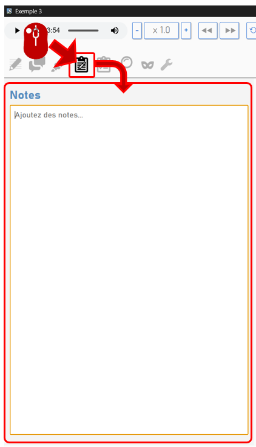

Ajouter des notes
Ajouter des notes
Le mode « notes » vous donne accès à une fenêtre de texte associée à l’entretien qui vous permet de laisser tous types de mémos au sujet du document. C’est l’endroit idéal pour laisser toutes les informations qualitatives qui ne trouvent pas leur place dans la base de données, rédiger un bref portrait de la personne enquêtée, synthétiser vos analyses sur l’entretien etc.

La validation des notes se fait via l’enregistrement de l’entretien dans son ensemble.